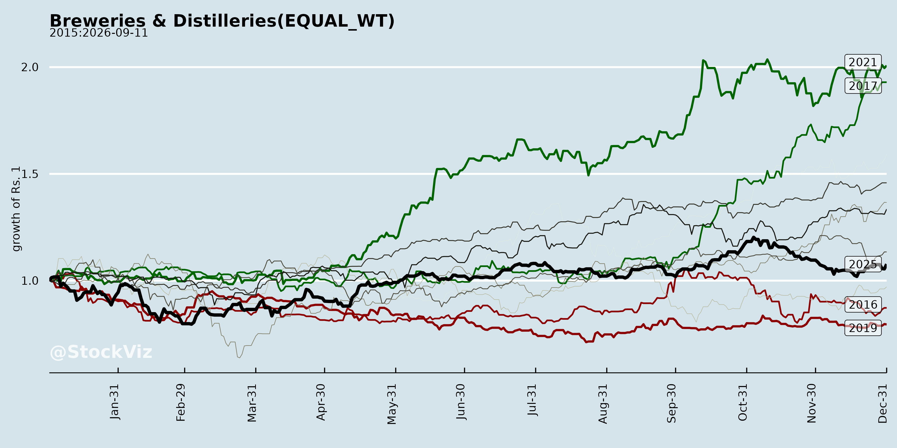
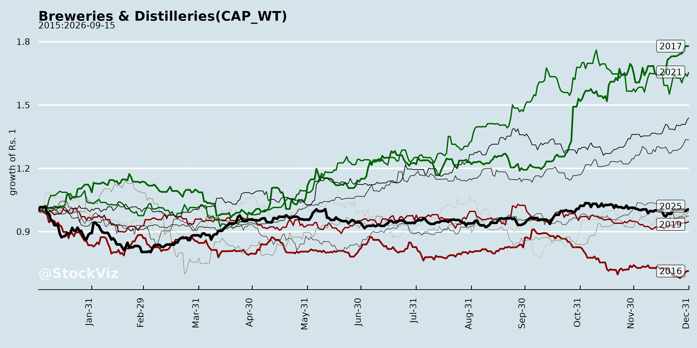
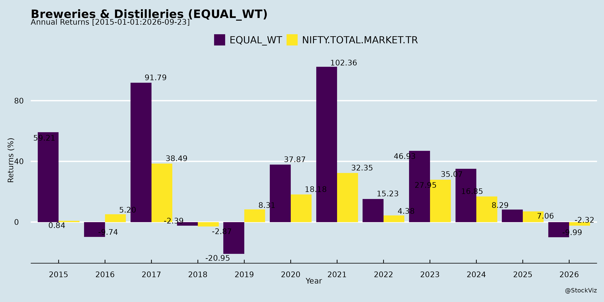
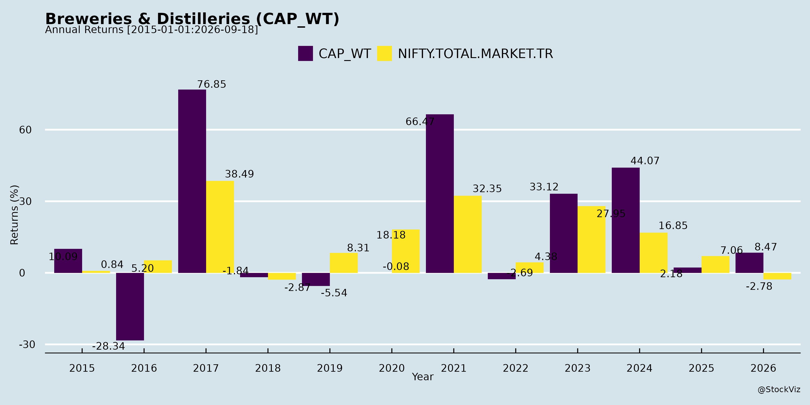
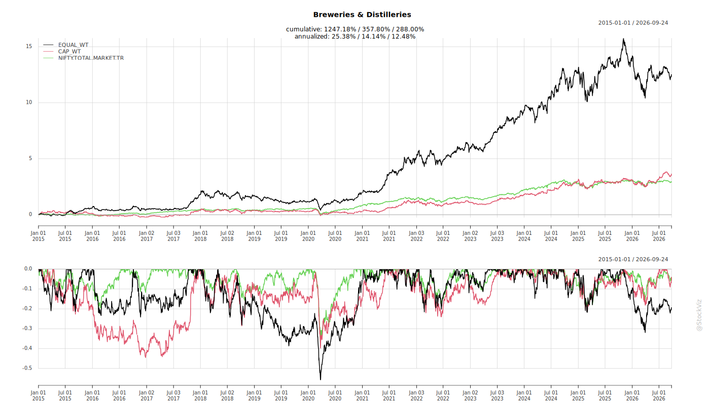
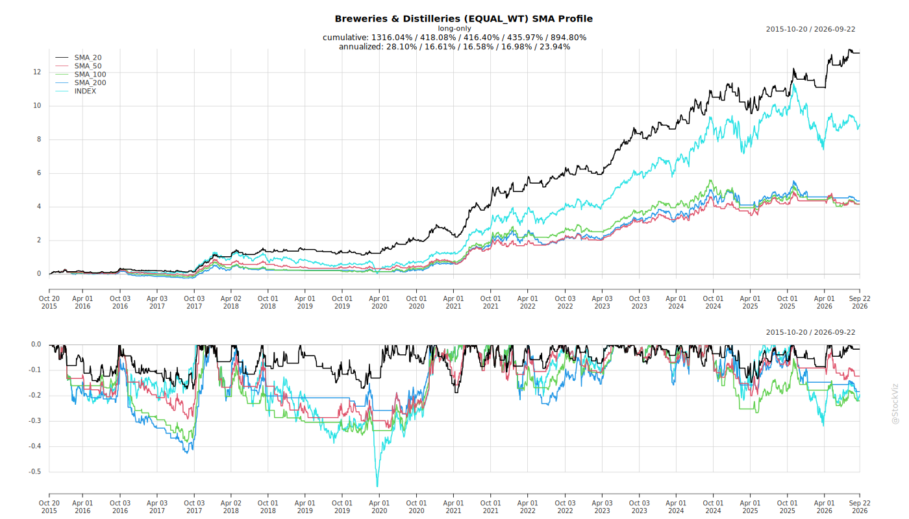
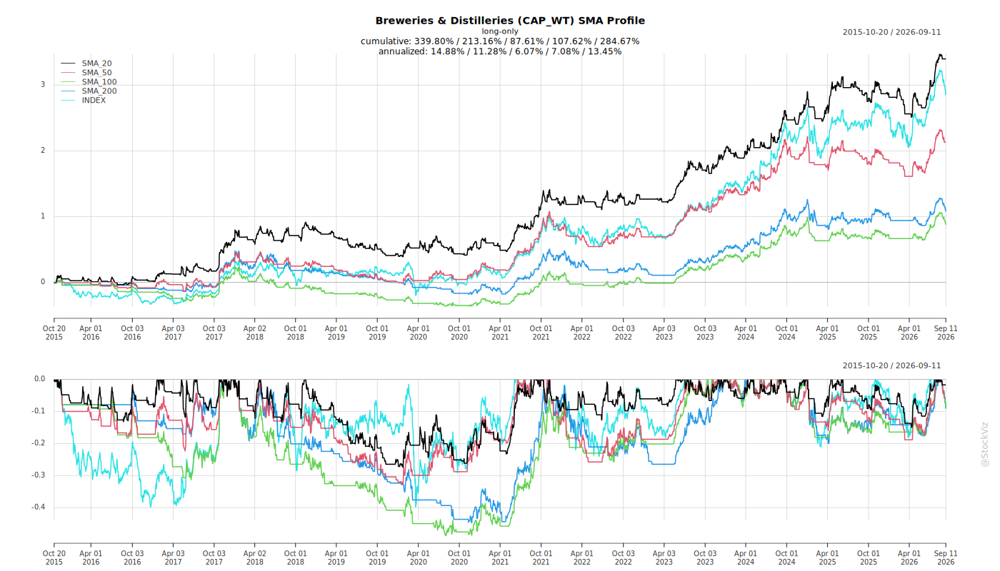
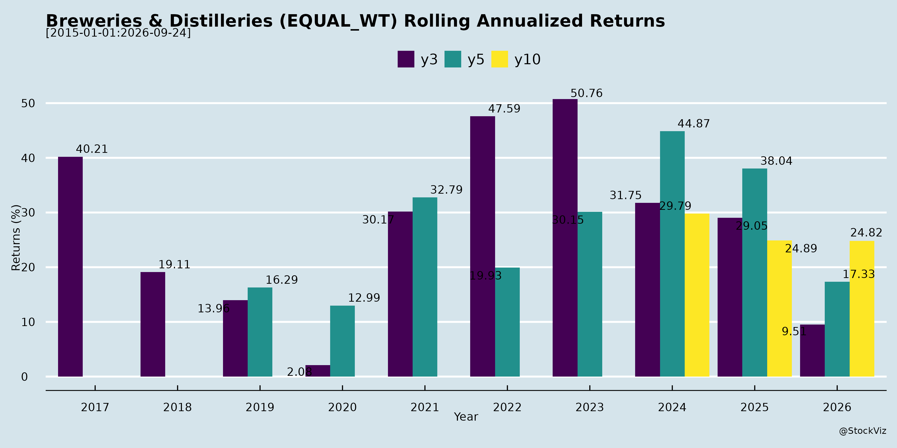
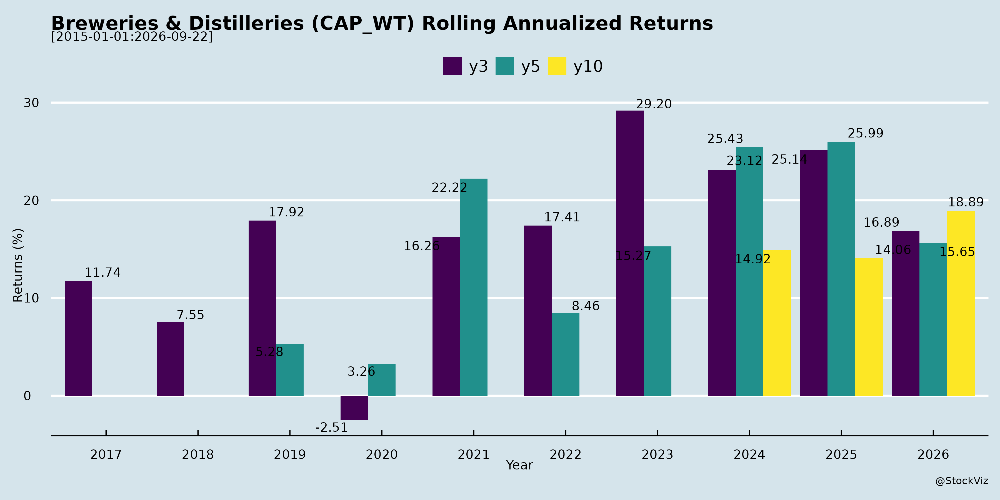

Annual Returns




Cumulative Returns and Drawdowns

SMA Scenarios


Current Distance from SMA
Rolling Returns


EBIT (% of Industry Total)
Revenue (% of Industry Total)
Analysis of Indian Breweries & Distilleries Sector
Using the provided documents (earnings transcripts, investor meet disclosures, and announcements from key players like BCL Industries, India Glycols, Sula Vineyards, Tilaknagar Industries, SOM Distilleries, Globus Spirits, Radico Khaitan, and others), here’s a synthesized analysis of the sector. The sector encompasses ethanol/distilleries (grain-based focus), IMFL (brandy, whiskey, premium spirits), beer, wine, and ancillary businesses (wine tourism, ENA/IMIL). Data reflects Q2/H1 FY26 trends (as of Nov 2025).
Headwinds (Challenges)
- Ethanol Oversupply & Low Demand: Grain-based distilleries (BCL, India Glycols) face low OMC allocations (50-60% utilization), forcing pivot to ENA sales amid industry oversupply (OMCs received 904 cr liters vs. 1,131 cr contracted). Ethanol volumes flat/declining; ENA prices pressured (INR 67/liter, downward trend expected).
- Input Cost Volatility: Maize prices at INR 23/kg (landed); FCI rice mandate limits maize ethanol to 60%. Damaged rice at INR 25.5/kg helps but forward contracts lock in higher costs.
- Regulatory/Policy Pressures: Excise hikes (e.g., Maharashtra 15-20% degrowth), MML entry barriers (FII limits), state-specific disruptions (Telangana license expiry caused destocking). Andhra/Karnataka taxation issues hit beer volumes (SOM: 19% decline).
- Margin Compression: Distillery EBITDA stable at 10.5% but ENA shift risks erosion; gross margins down (Sula: 900 bps YoY). High debt interest (6-6.5%) from expansions.
- Market Disruptions: Telangana (15% sales for Sula) destocking; IMFL competition in brandy/whiskey.
Tailwinds (Positive Factors)
- Premiumization Momentum: Strong traction in luxury/super-premium (Tilaknagar: Monarch Legacy Brandy in 6 states; SOM: Mahavat whisky; Sula: Source range at 10% of own brands, 40-50% CAGR).
- Market Share Gains: Andhra (Tilaknagar: 10% to 12%; industry +20%); Karnataka/Odisha recovery (SOM); CSD doubling (Sula). Pan-India expansion via usership (Tilaknagar-Spacceman).
- Wine Tourism Boom: Sula’s resorts at 77% occupancy (+350 bps YoY), +15% H1 growth; new Haven resort (50 keys added by FY26-end).
- Fundraises & Acquisitions: Tilaknagar raised INR 986 cr (preferential); Imperial Blue acquisition (CCI approved, Q3 close) to boost scale.
- Stable Inputs/NSV Growth: ENA/glass stable; NSR up (Tilaknagar: INR 1,215/case, +1.8% QoQ); subsidy-adjusted EBITDA +8-24% YoY.
Growth Prospects
- Short-Term (FY26 H2): Mid-teens volume growth (Tilaknagar); recovery in Karnataka/Odisha/Telangana; wine tourism festive boost (Sula: +250 bps margins). IMFL +beer premium launches (SOM single malt; Tilaknagar luxury whisky). EBITDA margins 15-16% standalone.
- Medium-Term (FY27-28): Low double-digit volume +2-3% NSR premiumization kicker (Tilaknagar); Prag distillery (36L cases, Andhra focus); Sula resort expansion (50% key growth). Ethanol expansions (BCL 150 KLPD) if blending rises to 27%.
- Long-Term: Pan-India scale via acquisitions/distribution (Imperial Blue, Spacceman); wine category penetration (Sula gaining share despite low S&D); exports/duty-free. Blending policy extension to 20-27%; IMIL/bottling ramp-up.
- Overall Projection: Sector revenue +10-17% YoY (H1 trends); premium > mass growth; tourism/IMFL to drive 15-20% CAGR in niche segments.
Key Risks
- Policy/Regulatory: Excise hikes, FTA duty cuts (EU/Australia MIP reductions could flood imports, hurting locals like Sula); state policy flips (Maharashtra MML, Andhra saliency shift).
- Demand/Supply Imbalance: Ethanol oversupply persists without blending hike/flex-fuel; beer volume slumps (Karnataka taxation).
- Execution/Financial: Acquisition integration (Imperial Blue debt/equity 1:1, net debt to rise); capex overruns (BCL Goyal on hold); high receivables (Sula South states: 250 days).
- External: Input volatility (maize/rice); competition (brandy/whiskey wars); unviable biodiesel/exports.
- Macro: Urban slowdown, monsoon impacts; debt sustainability (BCL/SOM rising working capital).
Summary: The sector shows resilience via premiumization and market share gains (IMFL/beer/wine), with tailwinds from expansions/fundraises outweighing ethanol headwinds. Growth prospects strong in H2 FY26+ (15%+ topline), led by South India recovery and tourism. However, policy risks and oversupply remain critical; monitor FTAs and state elections. Overall outlook positive for premium players, with 12-15% sector CAGR feasible if regulations stabilize. (Sources: Aggregated from transcripts; standalone unless noted.)
Investor
asof: 2025-11-27
Indian Breweries & Distilleries Sector Analysis (Based on Q2/H1 FY26 Disclosures)
The sector encompasses breweries (beer-focused), distilleries (ethanol/ENA/IMFL), and premium spirits/wine players. Key companies analyzed: Allied Blenders, Associated Alcohols, BCL Industries, Globus Spirits, India Glycols, Piccadily Agro, Radico Khaitan, Som Distilleries, Sula Vineyards, Tilaknagar Industries (TI), United Breweries (UB), United Spirits. Overall, Q2/H1 showed resilient volume growth (10-20% YoY for many) amid premiumization, but margins pressured by inputs/regulations. Sector revenue growth ~10-15% YoY, EBITDA margins 10-20% (adjusted for subsidies).
Headwinds
- Ethanol Oversupply & Low Allocations: Grain-based ethanol players (BCL, Globus) faced 50-60% OMC allocations vs. capacity; shift to ENA pressured margins (downward pricing to ~₹67/L). Industry supply exceeded demand (904 Cr L vs. 1,131 Cr L contracted).
- Raw Material Volatility: Maize prices ₹23-25/kg (higher than spot ₹18-20/kg due to forward contracts); FCI rice mandates capped maize ethanol at 60%. Glass/ENA stable but power/fuel up.
- State-Specific Disruptions: Karnataka tax hikes/slump (Som: 19% volume drop); Maharashtra MML policy/FII curbs (TI); Telangana license expiries (Sula: 15% sales hit); UP molasses quota cut (India Glycols).
- Demand Softness: Urban slowdown, monsoons, elections; beer volumes down 19% (Som); high inventory destocking.
- Regulatory/FTA Risks: Excise hikes (15%+ in some states); EU/Australia FTAs may cut MIP/duties, boosting imports (Sula stepping back from imports initially).
Tailwinds
- Premiumization Momentum: Luxury/super-premium growth (Piccadily Indri: top single malt, awards; TI luxury brandy; Sula Source: 10% revenue share, 40-50% CAGR).
- Wine Tourism Boom: Sula: 8% Q2/15% H1 growth; new resorts (Haven: +50 keys); record footfalls/occupancy (77%).
- Market Share Gains: Andhra (TI: 10→12%); Tamil Nadu (Som: 2-4%); Karnataka recovery (Som Sunny Beaches: 5k outlets).
- Capacity Expansions: On-track (Piccadily Indri/Chhattisgarh; Som UP: 10M cases; TI Prag: 36L cases; BCL 150 KLPD).
- Fundraises/Acquisitions: TI: ₹986 Cr preferential (Imperial Blue); strong institutional interest.
Growth Prospects
- Volume/Revenue: Mid-teens FY26 (TI: 16% Q2); H2 recovery via Karnataka/Odisha (Som), Andhra (TI), UP/IMFL (Som). Overall sector: 10-15% CAGR via premium (luxury whiskies, single malts).
- Premium/Elite Share: 78% stable/rising (Sula, TI); new launches (Piccadily Cashmir/Agneya; TI whiskey; Sula Muscat).
- Diversification: Exports/duty-free (Piccadily 28 countries); CSD doubling (Sula); imports revival (Sula); greenfield (Som UP brewery/distillery).
- EBITDA Margins: 15-19% sustainable (Som 15%, TI 15%, Sula 14-15%); H2 improvement via WIPS refunds (Sula), efficiencies.
- Long-Term: FTAs boost imports distribution (Sula); ethanol blending to 20-27%; wine tourism scaling (Sula +50% keys).
| Volume Growth |
10-20% YoY (beer/IMFL) |
Mid-teens (standalone); 15-20% combined post-acquisitions |
| NSR/Realization |
₹1,200-1,215/case (TI); stable/up QoQ |
+2-3% YoY via premium mix |
| EBITDA Margin |
14-19% (adj. subsidies) |
15-16% FY26; 16%+ FY27 |
| Key Drivers |
Premium launches, tourism, expansions |
Acquisitions (Imperial Blue), state recoveries |
Key Risks
- Policy/Regulatory: Excise hikes, FTAs (MIP cuts hit locals); state quotas (molasses/rice); MML/FII curbs (Maharashtra).
- Input/Commodity: Grain price spikes; ethanol oversupply (margins <10% if ENA focus).
- Execution: Capacity utilization (60% Sula); integration delays (TI Imperial Blue); debt rise (TI ₹200 Cr term debt).
- Competition/Demand: Aggressive discounting (Maharashtra); urban slowdown; local players in South.
- Liquidity: High receivables (Sula South: 250 days); working capital for expansions.
Summary: Sector resilient with premiumization/tourism tailwinds offsetting ethanol headwinds; growth via expansions/acquisitions (15%+ CAGR FY26-28). Risks policy-heavy, but strong balance sheets/fundraises mitigate. Bullish on premium IMFL/beer (TI, Piccadily, Som); cautious on ethanol (BCL). Overall outlook: Positive H2 recovery, 12-15% sector growth FY26.
Press Release
asof: 2025-11-27
Indian Breweries & Distilleries Sector Analysis
Based on recent announcements (Q2/H1 FY26 results, product launches, expansions from ABDL, AABL, Globus Spirits, Piccadily, Radico Khaitan, SOM Distilleries, Sula Vineyards, TI, UBL, and USL).
Tailwinds (Positive Drivers)
- Premiumization Momentum: Strong focus on high-margin premium whiskies/single malts (e.g., ABDL’s ICONiQ Winter doubling volumes; Radico’s Rampur 1943; Globus’ Doaab award; TI’s Seven Islands Pure Malt; USL’s Prestige & Above at 89% NSV share, +12.4% YoY). Vodka/rum innovations (AABL’s CP Vodka; Piccadily’s growth).
- Revenue & Profitability Growth: Robust H1/Q2 results—Piccadily revenue +12.9%, EBITDA +21%; USL standalone NSV +11.5%, EBITDA +32.5%; SOM consolidated PAT +4%; stable gross margins (USL 47.1%, +190 bps).
- Market Expansions & Launches: Geographic push (ABDL to UP/Haryana; AABL to Maharashtra/Delhi; UBL greenfield brewery in UP). New products driving festive/winter demand.
- Ancillary Revenue Streams: Wine tourism boom (Sula +8% Q2, record highs); awards boosting brand equity (Globus).
- Capacity & Supply Chain: Investments in breweries/distilleries (UBL 1-2mhl UP facility; SOM acquisitions).
Headwinds (Challenges)
- Regulatory Disruptions: Policy changes/license issues (USL headwinds in Maharashtra; Sula Telangana destocking; SOM weaker Karnataka sales).
- Revenue Declines in Spots: Softness in key states (Sula Q2 revenue -1.1%; SOM Q2 income -7.2%; temporary dips despite overall growth).
- One-Off Costs: Indirect taxes (USL INR40 Cr hit); employee severance (USL).
- Urban Demand Softness: Subdued in some premium segments (Sula notes).
Growth Prospects
- High Double-Digit Premium Growth: Whisky (66% market share, +7% H1 volume per IWSR); single malts/craft spirits; innovations (flavored vodkas, seasonal whiskies). USL/SOM forecast H2 festive rebound.
- Volume Expansion: USL +8.5% H1 volume; beer via UBL’s UP brewery (Q2 FY27 ops).
- Diversification: Brandy leadership (TI); wine tourism (Sula +14.5% H1); exports/awards (Globus).
- EBITDA Margins: 15-21% range, expanding via pricing/mix/productivity (USL underlying +113 bps H1).
- H2 Outlook: Festive/wedding season; capacity ramps; premium salience (ABDL ICONiQ No.2 in UP).
Key Risks
- Regulatory/Policy Volatility: State excise hikes, license renewals (e.g., Telangana/Maharashtra disruptions).
- State-Specific Dependence: Karnataka/UP/Telangana softness could persist; Andhra re-entry execution risks.
- Competition: Crowded premium whisky space; input cost inflation (stable now but volatile ENA/grains).
- Execution Delays: Greenfield projects (UBL/SOM); acquisitions (SOM’s WGNPL).
- Macro: Urban slowdown; festive underperformance; forex/commodity swings.
Overall Sector Outlook: Resilient with premium tailwinds offsetting regulatory noise. H2 growth likely 10-15% NSV, led by whisky/premiums, but monitor state policies. Strong balance sheets support expansions.
Copyright © 2023 SAS Data Analytics Pvt. Ltd. All rights reserved.
🐞